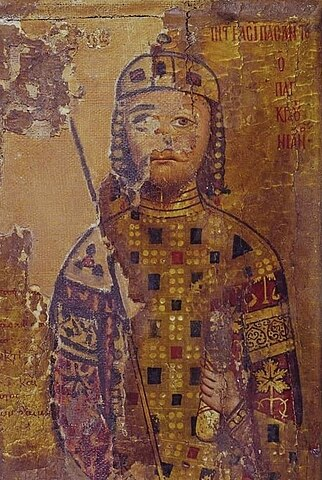
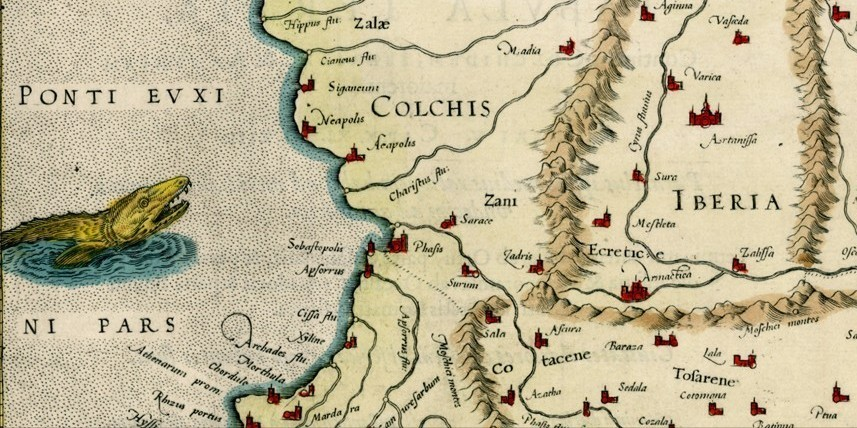
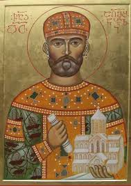
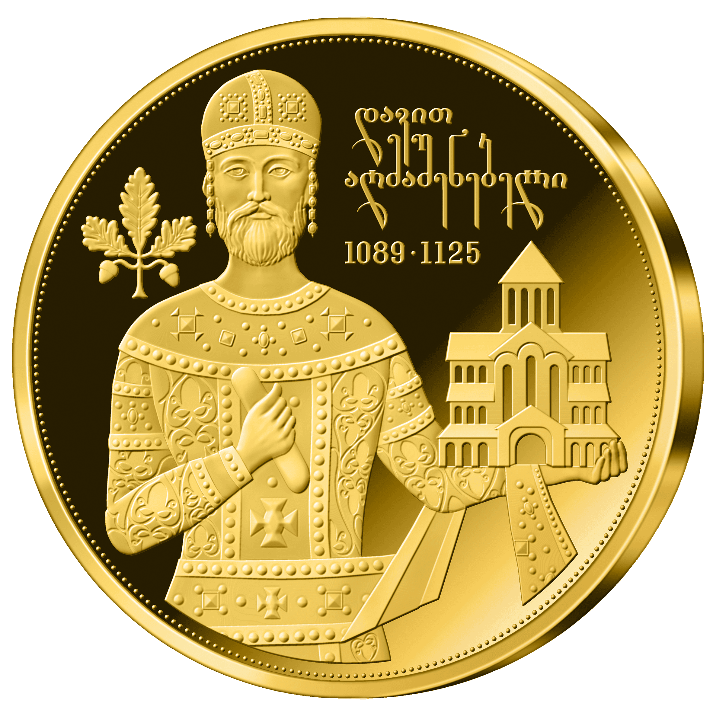

საქართველოს ერი ( ქართულად : საქართველო საქართველოს ) პირველად გააერთიანა ბაგრატიონთა დინასტიის ქვეშ მყოფი საქართველოს მეფე ბაგრატ III-ის მიერ XI საუკუნის დასაწყისში, რომელიც წარმოიშვა ძველ კოლხეთისა და იბერიის სამეფოების რამდენიმე მემკვიდრესახელმწიფოსგან
საქართველოს სამეფო აყვავებული იყო მე-11 და მე-12 საუკუნეებში ისეთი მმართველების ქვეშ, როგორებიც იყვნენ მეფე დავით IV აღმაშენებელი და მეფე თამარ დიდი . 1243 წლისთვის სამეფო დაეცა მონღოლთა შემოსევის ქვეშ, ხოლო გიორგი V ბრწყინვალეს დროს აღდგენის შემდეგ იგი კვლავ დაეცა ტიმურიდების იმპერიას 1403 წელს    